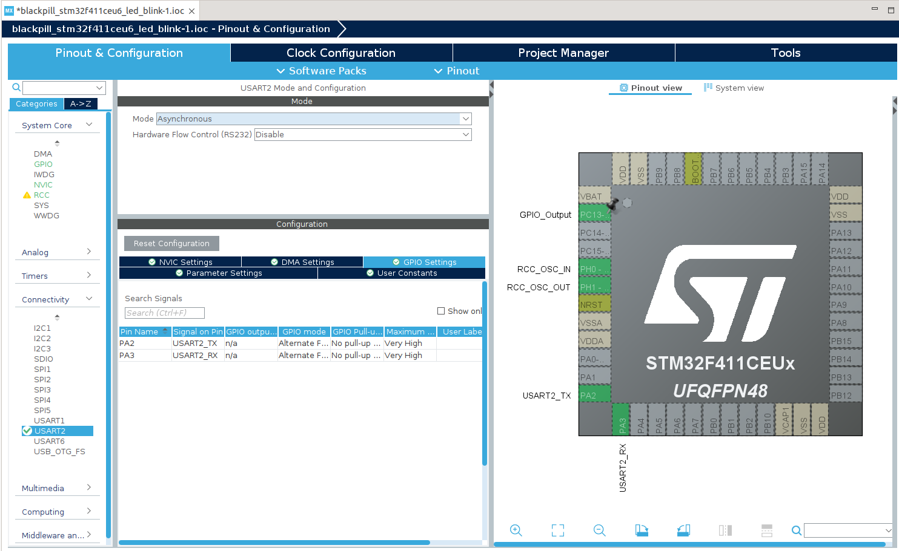

แนะนำการใช้งาน STM32CubeIDE สำหรับบอร์ด BlackPill STM32F411#
Keywords: STM32CubeIDE, STM32F4, BlackPill Microcontroller Boards
▷ STM32CubeIDE for STM32 Programming#
การเขียนโปรแกรมภาษา C/C++ สำหรับไมโครคอนโทรลเลอร์ STM32 มีซอฟต์แวร์ประเภท IDE ให้เลือกใช้งานอยู่หลายตัวเลือก เช่น
- Atollic TrueSTUDIO (free)
- AC6 System Workbench for STM32 - SW4STM32 (free)
- VS Code IDE + PlatformIO (free, open source)
- Keil MDK + uVision IDE (commercial)
- Arm Keil Studio IDE (commercial)
- IAR Embedded Workbench for Arm (commercial)
บริษัท STMicroelectronics ซึ่งเป็นผู้ผลิตชิป STM32 ก็มีซอฟต์แวร์ชื่อ STM32CubeIDE ให้ใช้งานได้ฟรี (สำหรับระบบปฏิบัติการ Windows, Linux และ MacOS) เปิดให้ลองใช้ครั้งแรก (STM32CubeIDE v1.0.0) ในเดือนเมษายน ค.ศ. 2019 แต่ก่อนหน้านั้น บริษัท ST ได้เปิดให้ใช้งานซอฟต์แวร์ Atollic TrueSTUDIO for STM32 ได้ฟรี
STM32CubeIDE ประกอบด้วยซอฟต์แวร์ที่เป็น Open Source ได้แก่
- Eclipse IDE + CDT
- GNU C/C++ for Arm toolchain
- GDB debugger
STM32CubeIDE ได้รวมซอฟต์แวร์ที่มีชื่อว่า STM32CubeMX เอาไว้ด้วย ซึ่งช่วยในการตั้งค่าการใช้งานสำหรับชิป STM32 สามารถสร้างไฟล์สำหรับโค้ด C/C++ และไฟล์ประเภทอื่นที่เกี่ยวข้องไว้ในโปรเจกต์ได้โดยอัตโนมัติ ทำให้ผู้ใช้สามารถเขียนโค้ดได้ง่ายขึ้น
นอกจากนั้นแล้วซอฟต์แวร์นี้ ยังรองรับการอัปโหลดไฟล์เฟิร์มแวร์ และดีบักโปรแกรมที่ทำงานโดยใช้บอร์ดไมโครคอนโทรลเลอร์จริงได้ (In-Circuit Debugging) ซึ่งจะต้องมีอุปกรณ์ประเภท Debug Probe ได้แก่ ST-LINK Debug Probe หรือ SEGGER J-Link Debug Probe และนำมาใช้ร่วมกับโปรแกรม GDB Server
หากผู้ใช้ได้ดาวน์โหลดไฟล์จากเว็บไซต์ของ ST เช่น สำหรับเวอร์ชัน Windows หรือ Linux มาติดตั้งในเครื่องคอมพิวเตอร์ของผู้ใช้ได้สำเร็จแล้ว ให้เรียกใช้งานซอฟต์แวร์ดังกล่าว ในบทความนี้ได้ทดลองใช้งานซอฟต์แวร์ v1.12.1 สำหรับ Ubuntu 22.04
รูป: การใช้งาน STM32CubeIDE v1.12.1 (Linux/Ubuntu 22.04)
รูป: หน้าต่างหลักเมื่อเริ่มต้นใช้งาน STM32CubeIDE
▷ LED Blink for BlackPill STM32F411 Board#
ถัดไปเป็นขั้นตอนการสร้างโปรเจกต์ใหม่สำหรับบอร์ด WeAct BlackPill STM32F411 โดยใช้ STM32CubeIDE (Linux) รวมถึงการตั้งค่าการใช้งานชิป STM32F411 และตัวอย่างโค้ดสาธิตการทำให้ LED กระพริบได้
รูป: PinMap แสดงตำแหน่งขาของบอร์ด BlackPill STM32F411
ขั้นตอน
- สร้างโปรเจกต์ใหม่ โดยเลือกเป็น STM32 Project
- เลือกชิปเป้าหมาย STM32F411CEU6 สำหรับบอร์ด BlackPill
- ตั้งชื่อโปรเจกต์ใหม่ และไดเรกทอรีสำหรับการเก็บไฟล์ของโปรเจกต์ใน Workspace ของ STM32CubeIDE
- ดาวน์โหลด STM32Cube Firmware สำหรับชิปเป้าหมาย เช่น STM32CubeFw F4 (หากยังไม่เคยมีการใช้งานและติดตั้งซอฟต์แวร์ในเครื่องคอมพิวเตอร์ของผู้ใช้)
- ตั้งค่าการใช้งานสำหรับชิปเป้าหมาย (เช่น ตั้งค่าความถี่ของวงจรภายใน กำหนดฟังก์ชันของขา GPIO เป็นต้น) โดยใช้ STM32CubeMX และสร้างไฟล์โค้ดต่าง ๆ สำหรับโปรเจกต์โดยอัตโนมัติ
- แก้ไขโค้ดในไฟล์
main.cเช่น เพิ่มโค้ดเพื่อทำให้ LED บนบอร์ดไมโครคอนโทรลเลอร์กระพริบ และส่งข้อความโดยใช้วงจร USART - ทำขั้นตอน Build Project เพื่อคอมไพล์โค้ด
- อัปโหลดไฟล์เฟิร์มแวร์ที่ได้ไปยังบอร์ด STM32F4 โดยใช้อุปกรณ์ ST-Link/V2 Debug Probe
- ดีบักการทำงานของโค้ดโดยใช้บอร์ดไมโครคอนโทรลเลอร์
เริ่มต้นด้วยการเลือกจากเมนู File > New > STM32 Project… เพื่อสร้างโปรเจกต์ใหม่ เลือกประเภท STM32 Project จากนั้นจะเข้าสู่ขั้นตอนการตั้งค่า STM32 Project
ในแท็บ "MCU/MPU Selector" ให้ค้นหาชิปเป้าหมายที่จะใช้งาน ซึ่งในกรณีคือ STM32F411CEU6
ในกรณีที่ใช้บอร์ดไมโครคอนโทรลเลอร์ของบริษัท ST เช่น บอร์ดในกลุ่ม NUCLEO ก็สามารถเลือกบอร์ดให้ตรงกับที่จะใช้งานได้ โดยเลือกในแท็บ "Board Selector"
รูป: ค้นหาและเลือกชิปเป้าหมาย
รูป: กดคลิกเลือก STM32F411CEU6
รูป: ตั้งชื่อโปรเจกต์ใหม่
รูป: เริ่มต้นขั้นตอนการดาวน์โหลด STM32Cube Firmware
รูป: กดยอมรับเงื่อนไขการใช้งานสำหรับ STM32Cube Firmware F4
เมื่อสร้างโปรเจกต์ใหม่แล้ว จะมีการเปิดใช้งาน STM32CubeMX โดยอัตโนมัติ เพื่อตั้งค่าการใช้งานชิปเป้าหมาย เช่น การตั้งค่าสำหรับสัญญาณ Clock การตั้งค่าเพื่อใช้วงจรต่าง ๆ เช่น GPIO, USART เป็นต้น
รูป: เริ่มต้นใช้งาน STM32CubeMX (เปิดใช้งานโดยอัตโนมัติจาก STM32CubeIDE)
ในแท็บ "Pinout & Configuration" คลิกเลือก System Core > RCC และในหัวข้อ "RCC Mode and Configuration" ให้เลือก Crystal/Ceramic Resonator สำหรับช่องตัวเลือก High Speed External Clock (HSE)
รูป: การตั้งค่า RCC Mode and Configuration โดยเลือก High speed Clock (HSE)
บนบอร์ด BlackPill STM32F411 มีวงจรสร้างสัญญาณความถี่ 25MHz และในตัวอย่างนี้ ได้เลือกใช้สัญญาณ Clock จากภายนอก มาสร้างสัญญาณสำหรับวงจรภายในชิป โดยใช้วงจร PLL เพื่อเพิ่มความถี่ให้สูงขึ้น (สูงสุดไม่เกิน 100MHz) เช่น เลือกใช้ความถี่ 96MHz ในตัวอย่างนี้
ในแท็บ "Clock Configuration" ให้คลิกเลือกสัญญาณอินพุต 25 MHz (Input Frequency) ผ่านไปยัง HSE
- ตั้งค่าตัวหาร M ให้เท่ากับ
/25แล้วจึงนำไปใช้กับวงจร Main PLL - ตั้งค่าตัวคูณ N ให้เท่ากับ
x192และตัวหาร P ให้เท่ากับ/2ตามลำดับ ซึ่งจะได้สัญญาณที่มีชื่อว่า SYSCLK จาก PLLCLK และมีความถี่ 96MHz - ตั้งค่า APB Prescaler ให้เท่ากับ
/1ซึ่งจะได้ HCLK เท่ากับ 96MHz - ตั้งค่า APB1 Prescaler ให้เท่ากับ
/2ซึ่งจะได้ความถี่ของบัส APB1 เท่ากับ 48MHz - ตั้งค่า APB2 Prescaler ให้เท่ากับ
/1ซึ่งจะได้ความถี่ของบัส APB2 เท่ากับ 96MHz
รูป: การตั้งค่าเพื่อสร้างสัญญาณ Clock ภายในชิปจากสัญญาณอินพุต HSE (25MHz)
ในแท็บ "Pinout & Configuration" คลิกเลือก "System Core > GPIO" และในหัวข้อ "GPIO Mode and Configuration" ให้เลือกเปิดใช้งานขา PC13 เป็นขาเอาต์พุต (โหมดการทำงานแบบ Push-Pull และ No Pull-up / Pull-down) สำหรับวงจร LED บนบอร์ด BlackPill
รูป: การตั้งค่าสำหรับการใช้งานขา GPIO - PC13
ถัดไป ให้เปิดใช้งานวงจร USART2 เพื่อส่งข้อมูลบิตอนุกรมแบบอะซิงโครนัส (Mode: Asynchronous) ในแท็บ "Pinout & Configuration" คลิกเลือก "Connectivity > USART2" แล้วเลือกใช้งานขา PA2 & PA3 สำหรับฟังก์ชันการทำงานของขา USART2 TX & RX

รูป: การตั้งค่าการใช้งาน USART2
รูป: การตั้งค่า Baudrate สำหรับ USART2 เช่น 115200
เมื่อตั้งค่าการใช้งานแล้ว ถัดไปจะต้องมีการบันทึกการตั้งค่าลงในไฟล์ .ioc ไว้ในโปรเจกต์ แล้วสร้างไฟล์ที่เกี่ยวข้องกับตามการตั้งค่าในโปรเจกต์ โดยเลือกจากเมนู Project > Generate Code
ในส่วนที่เรียกว่า Project Explorer จะปรากฏโครงสร้างของไดเรกทอรีย่อยและไฟล์ต่าง ๆ
ของโปรเจกต์ที่ถูกสร้างขึ้นโดยอัตโนมัติ (ให้ลองสังเกตดูชื่อไฟล์ต่าง ๆ และการจัดแบ่งไฟล์)
จากนั้นให้ลองคลิกเลือกไฟล์ main.c เพื่อแก้ไขโค้ด
รูป: การแก้ไขโค้ดในไฟล์ main.c
การแทรกหรือเพิ่มโค้ด จะต้องเขียนอยู่ในบริเวณของโค้ดที่ได้มีการแบ่งส่วนและกำหนดไว้สำหรับ User Code เนื่องจากว่า เมื่อมีการตั้งค่าใหม่หรือแก้ไขไฟล์ .ioc โดยใช้ STM32CubeMX จะต้องมีการสร้างไฟล์ใหม่ในโปรเจกต์ ดังนั้นวิธีการนี้ จะช่วยให้โค้ดในส่วนของ User Code ยังคงไว้ ไม่ถูกลบออก
ลองมาแก้ไขหรือเพิ่มโค้ด เช่น ในฟังก์ชัน main() สำหรับประโยคคำสั่ง while(1) {...}
/* Infinite loop */
/* USER CODE BEGIN WHILE */
while (1)
{
/* USER CODE BEGIN 3 */
// Toggle LED connected to the PC13 pin.
HAL_GPIO_TogglePin(GPIOC, GPIO_PIN_13);
// Delay for 500 msec
HAL_Delay(500);
}
/* USER CODE END 3 */
ข้อสังเกต: ในฟังก์ชัน main() มีการเรียกฟังก์ชันต่อไป ซึ่งถูกสร้างไว้โดยอัตโนมัติในขั้นตอนที่มีการเรียกใช้ STM32CubeMX
HAL_Init();รีเซตและเริ่มต้นการทำงานของวงจรภายในชิปSystemClock_Config();ตั้งค่าการใช้งานสัญญาณ Clock และกำหนดความถี่MX_GPIO_Init();ตั้งค่าและเริ่มต้นการใช้งานขา GPIO เนื่องจากมีการตั้งค่าใช้งานขา PC13MX_USART2_UART_Init();ตั้งค่าและเริ่มต้นใช้งานวงจร USART2 เนื่องจากมีการตั้งค่าใช้งาน USART2 และเลือกใช้ขา PA2 & PA3 สำหรับการทำงานของวงจรดังกล่าว
หากต้องการให้สร้างไฟล์เอาต์พุต .hex และ .bin ก็สามารถตั้งค่าใช้งานในส่วนที่เรียกว่า "MCU Post build outputs" ตามตัวอย่างต่อไปนี้
รูป: การตั้งค่าในส่วน C/C++ Build Settting - MCU Post build outputs
รูป: แสดงให้เห็นว่า การทำขั้นตอน Build Project ทำได้สำเร็จแล้ว
▷ ST-Link Debug#
ขั้นตอนถัดไปคือ การอัปโหลดไฟล์เฟิร์มแวร์ไปยังบอร์ดไมโครคอนโทรลเลอร์ โดยใช้อุปกรณ์ ST-Link/V2 และลองดีบักโค้ดโดยใช้บอร์ดไมโครคอนโทรลเลอร์
ก่อนอื่นจะต้องสร้างและตั้งค่าในส่วนที่เรียกว่า Debug Configuration สำหรับ STM32 C/C++ Application
รูป: การตั้งค่าสำหรับ Debug Configuration
รูป: ในแท็บ Debugger ให้เลือก SWD Interface สำหรับ ST-Link
สำหรับผู้ใช้ Ubuntu แนะนำให้ทำคำสั่งแบบ Command Line ต่อไปนี้ก่อน
# For ST-LINK GDB server to work correctly,
# install the libncurses5 shared library.
$ sudo apt-get install libncurses5
# Remove Modem Manager
$ sudo apt-get purge modemmanager
# Add the current user to the groups 'dialout' and 'plugdev'
$ sudo usermod -aG dialout $USER
$ sudo usermod -aG plugdev $USER
เมื่อสร้างและตั้งค่า Debug Configuration ไว้แล้ว ให้ลองทำขั้นตอนจากเมนู Project > Debug
รูป: การทำขั้นตอน Debug และการหยุดชั่วคราวตามบรรทัดในโค้ดที่ได้ตั้งค่าไว้เป็นตำแหน่ง Breakpoints
▷ Serial Output#
ถ้าต้องการส่งข้อความโดยใช้วงจร USART2 ซึ่งได้มีการตั้งค่าใช้งานเอาไว้แล้ว
โดยการสร้างและเรียกใช้ฟังก์ชันชื่อ MX_USART2_UART_Init()
ก็มีตัวอย่างการเขียนโค้ดดังนี้ เช่น การเรียกใช้ฟังก์ชัน HAL_UART_Transmit(...)
การเพิ่มโค้ดในไฟล์ main.c สำหรับ Header Files เช่น
/* USER CODE BEGIN Includes */
#include <stdio.h>
#include <string.h>
/* USER CODE END Includes */
และภายในฟังก์ชัน main() สำหรับส่วนที่เป็น while(1) {...}
/* Infinite loop */
/* USER CODE BEGIN WHILE */
while (1)
{
// Toggle the LED (PC13) pin.
HAL_GPIO_TogglePin(GPIOC, GPIO_PIN_13);
// Get the current logic value of the PC13 pin.
uint8_t pinState = HAL_GPIO_ReadPin(GPIOC, GPIO_PIN_13);
char sbuf[32];
// Write a string to the string buffer (sbuf),
// showing the current LED state and the system tick count.
sprintf(sbuf, "LED State: %s, Ticks: %lu\n",
(pinState==GPIO_PIN_SET) ? "1":"0", HAL_GetTick());
// Send the string specified by the sbuf variable to USART2.
HAL_UART_Transmit(&huart2, (uint8_t *)sbuf,
strlen(sbuf), HAL_MAX_DELAY);
// Delay for 500 msec.
HAL_Delay(500);
}
/* USER CODE END 3 */
โค้ดตามตัวอย่าง มีการเรียกใช้ฟังก์ชัน เช่น
HAL_GPIO_TogglePin(...)เพื่อสลับสถานะลอจิกที่ขา PC13HAL_GPIO_ReadPin(....)เพื่ออ่านสถานะลอจิกที่ขาดังกล่าวในขณะนั้นHAL_GetTick()เพื่ออ่านค่าจำนวนนับของการเกิด System Tick (นับเพิ่มทุก ๆ 1 วินาที)HAL_UART_Transmit(...)เพื่อส่งข้อความในอาร์เรย์ของcharออกทาง USART2
เมื่อแก้ไขโค้ดและทำขั้นตอน Build Project แล้ว ให้ทดสอบการทำงานของโค้ด โดยใช้บอร์ดไมโครคอนโทรลเลอร์
ข้อสังเกต: บอร์ด BlackPill STM32F411 ไม่มีวงจร USB-to-Serial Bridge ดังนั้นจึงต้องใช้โมดูลภายนอก เพื่อทำหน้าที่เป็น USB-to-Serial Bridge และเชื่อมต่อกับขาสัญญาณ PA2 / USART2_TX และ USART2_RX / PA3
รูป: ตัวอย่างอุปกรณ์สำหรับการทดลอง ST-Link/V2 (clone), WeAct Studio BlackPill STM32F411 และ WeAct Studio CHP343P-based USB-to-Serial Adapter
ตรววจสอบการรับข้อความจากบอร์ดไมโครคอนโทรลเลอร์ โดยใช้โปรแกรมอย่างเช่น Arduino Serial Monitor
รูป: ตัวอย่างข้อความที่ได้รับจากบอร์ดไมโครคอนโทรลเลอร์
▷ กล่าวสรุป#
บทความนี้นำเสนอการใช้งานซอฟต์แวร์ STM32CubeIDE ในเบื้องต้น ได้ลองสร้างโปรเจกต์สำหรับการเขียนโค้ด C/C++ การตั้งค่าการใช้งาน เช่น การกำหนดความถี่ของวงจรภายในชิป การเปิดใช้งานขา GPIO และวงจร USART เป็นต้น เพื่อนำมาใช้กับบอร์ด WeAct Studio BlackPill (STM32F411CEU6 MCU)
This work is licensed under a Creative Commons Attribution-ShareAlike 4.0 International License.
Created: 2023-07-06 | Last Updated: 2023-07-07